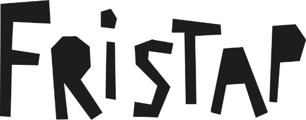

Fristap is het man-met-gitaar project van Dieter Fierens.
Hij heeft eens een relatie voor zijn ogen zien kapot gaan en is daardoor in een soort van zwart gat tussen een rots en een harde plaat terechtgekomen.
Het Transland. Wat hij daar meemaakte en voelde heeft hij meteen opgeschreven en er een paar mooie akkoorden bij verzonnen.
10 weken, 10 liedjes. Daarna werden de nummers chronologisch en zonder veel opsmuk op band gepleurd. Daarvoor riep hij de hulp in van de Arme Tovenaar Laurens Joensen (Yentl en De Boer, Steam Power,…), die de rol van producer/gitarist op zich nam. De Hoge Noord Henrik Holm (Vals Plat, The Stringlers, The Tennessee Studs,…) speelde bas en zingende zaag.
10 weken, 10 liedjes. Daarna werden de nummers chronologisch en zonder veel opsmuk op band gepleurd. Daarvoor riep hij de hulp in van de Arme Tovenaar Laurens Joensen (Yentl en De Boer, Steam Power,…), die de rol van producer/gitarist op zich nam. De Hoge Noord Henrik Holm (Vals Plat, The Stringlers, The Tennessee Studs,…) speelde bas en zingende zaag.
Video
De Tolmin Kloof is het openingsnummer van Het Transland. Week 1 na de breuk, niets dan tranen. De kloof in het Sloveense Tolmin is een plek waarnaar Dieter graag op vakantie had willen gaan met zijn ex en hun hond. Helaas is dat nu te laat. Het is tevens een metafoor voor de onmenselijke afstand die er met de jaren ontstond tussen hen.
Live
Fristap is luistermuziek. Er wordt in een prachtig kartonnen decor een verhaal verteld en als de luisteraar het toestaat kan hij of zij zich laten onderdompelen in warme, melancholische klanken en poëtische teksten. De ideale omgeving hiervoor is een alternatief festival met mooie meisjes die in het gras liggen te dromen. Maar het zou ook kunnen werken in een oude bruine kroeg, waar cultuurminnende grijsaarden met een tripel in de hand het rookverbod negeren.
Ontwerp

Pers
“We hadden nog nooit van Fristap gehoord, maar nu wel” - De Transland Krant
“Wist je dat een doedelzak vijf pijpen heeft?” - ook De Transland Krant
“Wist je dat een doedelzak vijf pijpen heeft?” - ook De Transland Krant